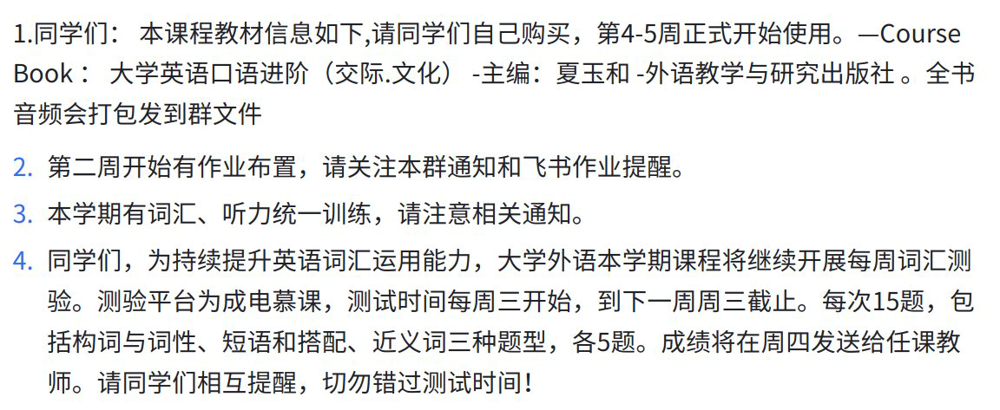
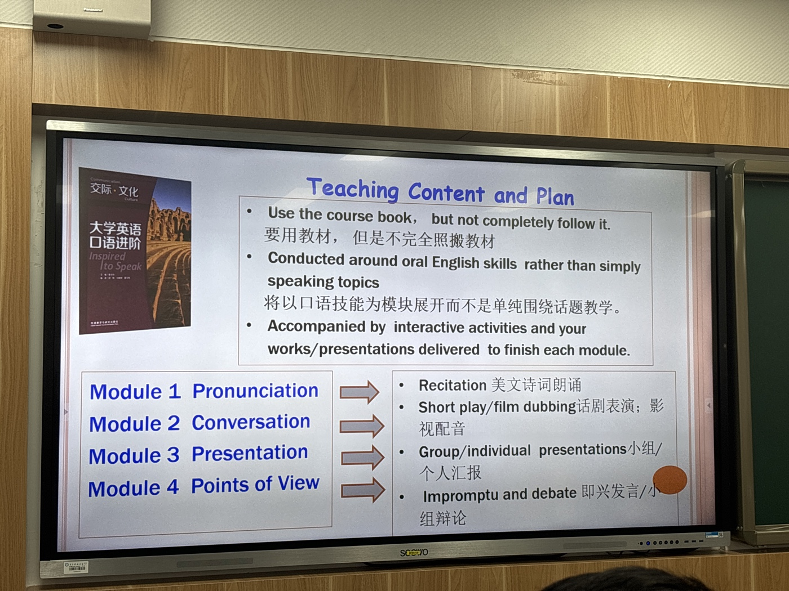
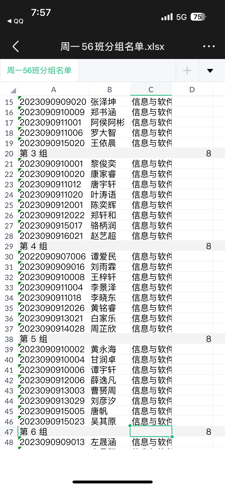
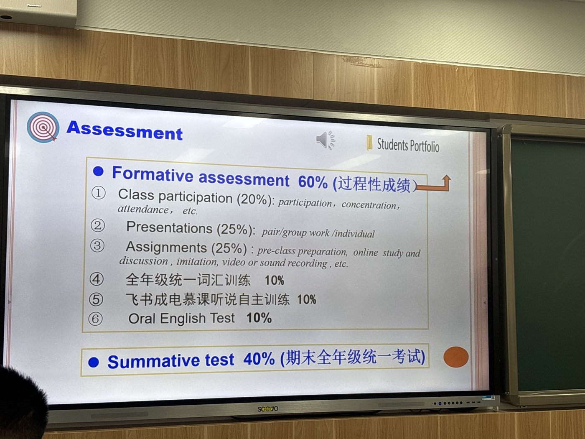
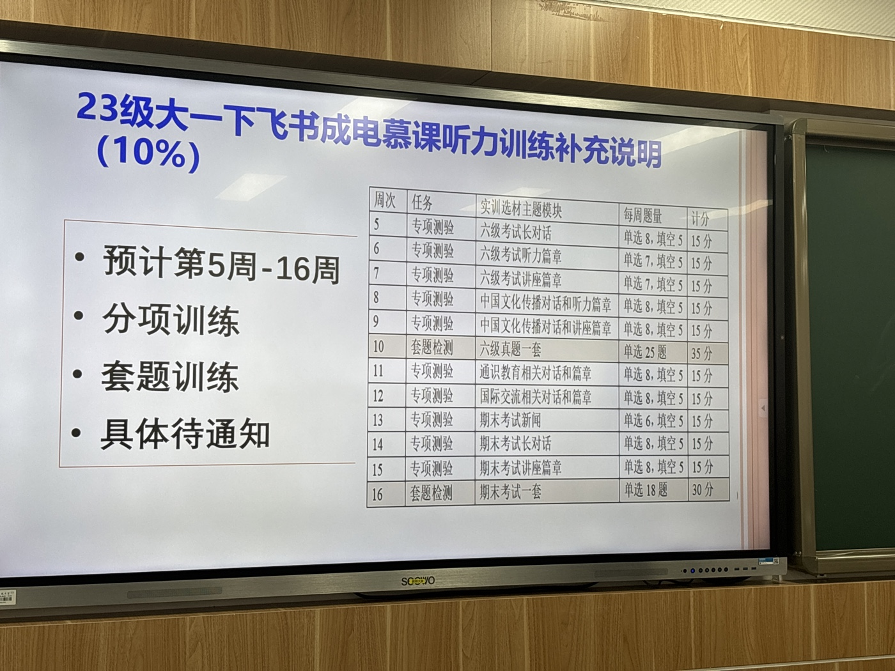
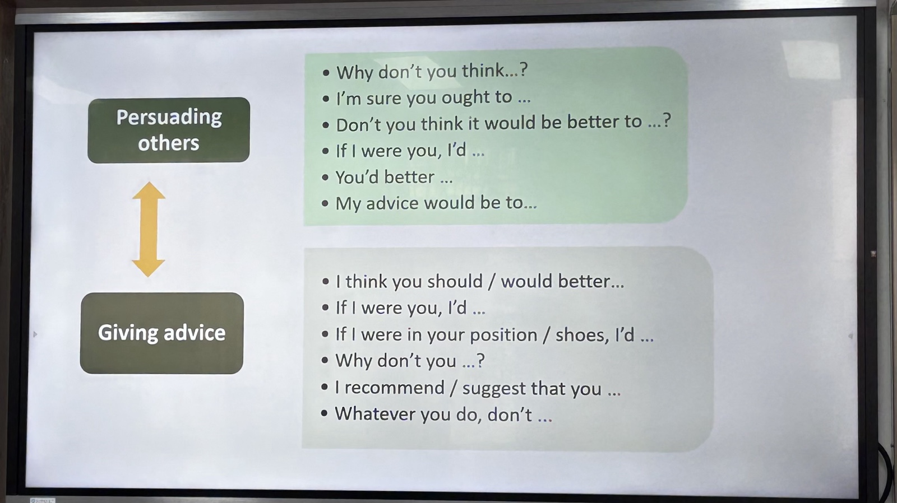
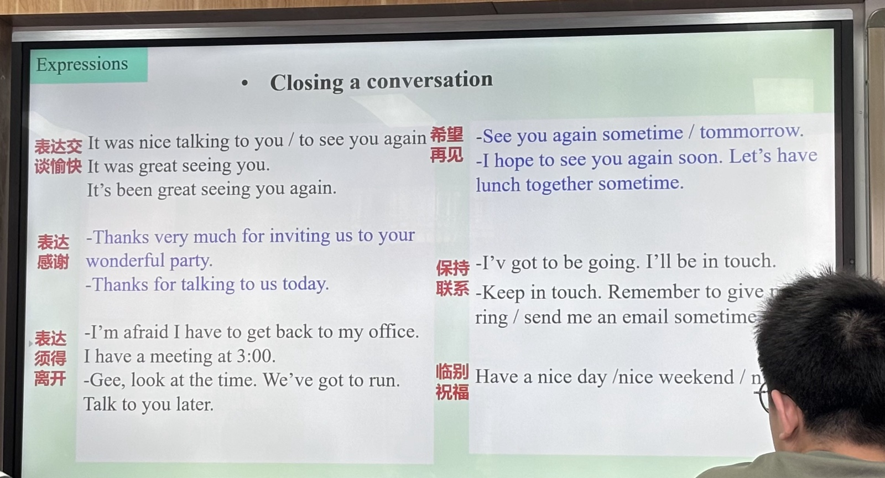
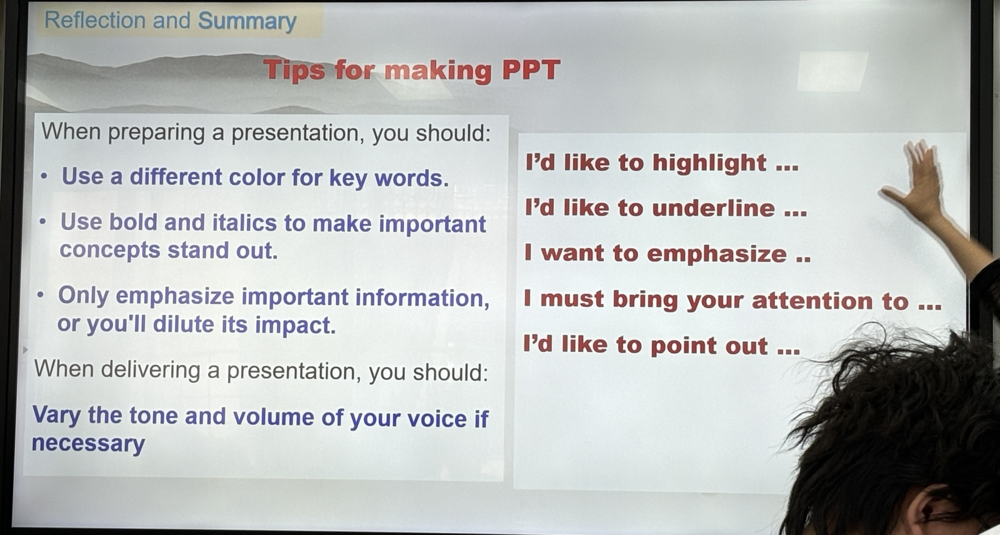

英语口语进阶 笔记
六级要考到520以上，清北要求520，C9要求500
备忘录
2024.3.10

教学计划

分组

成绩构成

- oral English Test 口语考试

笔记
flourishes v.兴隆
prosperity n.繁荣；富裕
prosperous a.繁荣的
fruitful a.硕果累累的
expertise a.专业的
eloquence n.口才；表达力
obtain v.获得
连读
一句话中相邻的两个单词，前一个单词以辅音结尾，后一个单词以元音开始，拼读成元音+辅音
失爆
重读
- 名词修饰名词 - 第一个名词重读
- 组合名词重读第一个词
- 形容词修饰名词 - 后面的名词重读
- 要形容词的组合名词 - 重读形容词
通常 实词（有实际意义）需要被重读，虚词不重读
PowerPoint
24.4.8（make a conversation）


24.4.15（表示语气的词语）


24.4.22（make a presentation）

24.5.6

- Increase some media such as pictures and video
Translating practice (CET-6 [2023.6])
Original text:
近年来，越来越多的中国文化产品走向全球市场，日益受到海外消费者的青睐。随着中国对外文化贸易的快速发展，中国文化产品出口额已持续多年位居世界前列，形成了一批具有国际影响力的文化企业、产品和品牌。数据显示，中国的出版物、影视作品、网络文学与动漫作品等在海外的销售量连年攀升。中国政府出台了一系列政策鼓励和支持更多具有中国元素的优秀文化产品走出国门，扩大海外市场份额，进一步提升中国文化的世界影响力。
Translate:
In recent years, more and more Chinese culture products, which are increasingly appreciated by foreign consumers, access to global marketing. As China shapely developing the trade of
Homework
24.5.14
What would life be like without the Internet or smartphone?
Life without the Internet or smartphones would be markedly different, impacting various aspects of daily existence, communication, work, entertainment, and access to information. Here are some key ways life would change:
Communication
- Personal Interaction: People would rely more on face-to-face interactions and landline phones for communication. Letter writing might make a significant comeback for long-distance communication.
- Social Media: The absence of social media platforms would mean that personal updates, news, and events would be shared more through word-of-mouth, traditional media, and in-person gatherings.
Work and Productivity
- Work Dynamics: Remote work would be nearly impossible, leading to a greater emphasis on in-office work. Collaboration would be more challenging, relying on physical meetings, phone calls, and fax machines.
- Information Sharing: Sharing documents and information would revert to physical means like printed documents, couriers, and face-to-face exchanges.
Information Access
- Research and News: People would depend on physical libraries, newspapers, television, and radio for news and information. Research would be more time-consuming, requiring visits to libraries and consultations with experts.
- Learning: Online education and resources would be unavailable, so education would rely entirely on in-person teaching and physical textbooks.
Entertainment
- Media Consumption: Entertainment would be limited to television, radio, DVDs, CDs, and physical books and magazines. Streaming services and online gaming would not exist.
- Social Activities: Without social media and online event platforms, people would learn about social events through local advertisements, community boards, and word-of-mouth.
Shopping and Services
- Retail: Online shopping would be non-existent. People would rely on physical stores for all purchases, which could mean less convenience and higher travel costs.
- Banking and Utilities: Services like online banking, bill payments, and customer service would be conducted in person or over the phone, likely leading to longer wait times and less convenience.
Health and Well-being
- Healthcare: Telemedicine and online health resources would be unavailable. All medical consultations would require physical visits to healthcare facilities.
- Mental Health: The absence of constant connectivity might reduce information overload and digital stress, potentially leading to improved mental health for some individuals.
Travel and Navigation(导航)
- Navigation: People would rely on physical maps and written directions instead of GPS and online maps, making travel planning and navigation more cumbersome.
- Travel Booking: Booking travel arrangements would need to be done through travel agents or directly with providers, likely requiring more time and effort.
Innovation and Economy
- Technological Advancement: The pace of technological and business innovation might slow down without the rapid exchange of ideas and global collaboration enabled by the Internet.
- Economic Impact: Many businesses that rely on e-commerce and digital services would not exist, potentially leading to fewer job opportunities in these sectors.
Overall, life without the Internet or smartphones would be simpler in some ways but also less convenient and more localized. The speed of communication, access to information, and many modern conveniences would be greatly reduced, leading to a slower pace of life and a greater emphasis on direct, personal interactions.
Textbook P80 Activity2

To address this question, you need to consider each applicant's specific circumstances and needs, then discuss and reach a consensus. Here are the details for each applicant:
- William, 80 years old, met a serious traffic accident and is in a coma.
- Charles, 40 years old, overweight, needs a liver transplant, which will probably extend his life by around five years.
- Lolita, a one-year-old baby, needs a major heart operation, but the chances of success are unknown.
- Marlow, a 30-year-old man, wants to have a sex change. He has been applying and saving money for ten years for the operation.
Analysis
- William:
- Elderly (80 years old).
- Currently in a coma, survival chances uncertain.
-
Investing in his treatment may not yield long-term health benefits.
-
Charles:
- Middle-aged (40 years old).
- Liver transplant has clear benefits, expected to extend life by about five years.
-
Health condition (overweight) might affect surgery success.
-
Lolita:
- Youngest (one year old).
- Complex heart surgery with unknown success rates.
-
If successful, she could potentially have a long life ahead.
-
Marlow:
- Young adult (30 years old), has been striving for this surgery for ten years.
- Surgery is for gender confirmation, significantly impacting his mental health and quality of life.
- This is not a life-saving surgery but has profound implications for his well-being.
Discussion Points
- Urgency: Who needs the treatment most urgently?
- Surgery Success and Expected Life: Who has the highest success rate and the potential for extended life post-treatment?
- Quality of Life: Whose treatment would result in the greatest improvement in quality of life?
- Ethical Considerations: Who needs the money more? Consider factors like age, family background, etc.
Possible Conclusion
- Prioritize Urgent and High Success Cases: If surgery success and expected lifespan are decisive factors, Charles might be a strong candidate since a liver transplant can extend his life by about five years.
- Consider Age and Future Life: Although Lolita's surgery has an unknown success rate, if successful, she could have a long future ahead.
- Quality of Life Improvement: Marlow's surgery, while not life-saving, significantly impacts his quality of life, and he has been working towards this for ten years.
The final decision should be reached through discussion and consensus, weighing the pros and cons of each aspect.
Given the analysis and discussion, the final judgment is:
Decision
Lolita, the one-year-old baby who needs a major heart operation, should receive the fund of 100,000 yuan for medical treatment.
Justification
- Potential for a Long Life:
-
If Lolita's heart surgery is successful, she has the potential to live a long and healthy life. Investing in her treatment offers the possibility of many decades of life ahead.
-
Age and Future Contribution:
-
At just one year old, Lolita represents the youngest and most vulnerable of the applicants. Successfully treating her now could provide a lifetime of potential.
-
Ethical Considerations:
- Providing the funding for a child in critical condition aligns with many ethical principles, including prioritizing the most vulnerable and giving a chance for a long-term positive outcome.
While Charles's liver transplant also presents a clear benefit, Lolita's potential for a significantly longer life span, given her young age, makes her the priority for this funding. This decision aims to maximize the impact of the charitable funds by potentially securing many years of healthy life for the youngest applicant.
要回答这个问题，你需要考虑每个申请人的具体情况和需求，并通过讨论达成共识。以下是每个申请人的情况：
1. **William, 80岁，遭遇严重交通事故，处于昏迷状态。**
2. **Charles, 40岁，超重，需要肝移植，这可能会使他的生命延长约五年。**
3. **Lolita，一岁，需要进行重大心脏手术，但成功的几率未知。**
4. **Marlow, 30岁，想做变性手术。他已经申请并存钱十年。**
##### 分析
1. **William**：
- 年龄较大（80岁）。
- 目前处于昏迷状态，生存几率不确定。
- 投资在他的治疗上可能不会带来长期的健康效益。
2. **Charles**：
- 40岁，正值中年。
- 肝移植手术有明确的好处，预计会延长生命约五年。
- 健康状况（超重）可能会影响手术的成功率。
3. **Lolita**：
- 年龄最小（一岁）。
- 手术复杂且成功几率未知。
- 如果成功，她有可能拥有长寿的机会。
4. **Marlow**：
- 30岁，已经为手术努力了十年。
- 手术是为了性别确认，对他的心理健康和生活质量有重大影响。
- 这不是一个救命的手术，但对他的生活质量有深远影响。
##### 讨论方向
- **紧急程度**：谁的情况最紧急，最需要立即治疗？
- **手术成功率和预期寿命**：谁的手术成功率高，并且在成功后可以获得较长的预期寿命？
- **生活质量**：谁的治疗会对他们的生活质量产生最大的积极影响？
- **伦理考虑**：谁更需要这笔钱？考虑年龄、家庭背景等因素。
##### 可能的结论
1. **优先考虑紧急且高成功率的情况**：如果手术成功率和预期寿命是决定性因素，Charles可能是一个较好的选择，因为肝移植可以明确地延长他的寿命约五年。
2. **考虑年龄和未来生活**：Lolita虽然手术成功率未知，但如果成功，她将有一个漫长的未来。
3. **生活质量的改善**：Marlow的手术虽然不是救命的，但对他的生活质量有着重大影响，且他已经为此努力了十年。
最终的决定应在讨论各方的意见后达成共识，可能会涉及权衡以上各方面的利弊。
24.5.27
1、Please describe what you see and what is reflected in these pictures. Then discuss further about what you think of it by relating it to yourself.

# The road I want to take.
### Picture and Reflection
The left panel contains the phrase: “I will take the road trodden black.” which represents a choice to follow the crowd, adhering to established norms and possibly seeking safety and certainty.
In contrast, the right panel contains the phrase: “I will take the road less traveled by.” which represents a choice to pursue individuality, adventure, and personal growth by opting for the unconventional route.
### ABOUT ME
In my own life, I often face decisions that mirror the scenario depicted in the image. For instance, choosing a career path, deciding on educational pursuits.
Opting for the more conventional path often provides security and predictability, which can be comforting and practical. However, choosing the less conventional route can lead to unique experiences, personal growth, and potentially greater fulfillment, albeit with more uncertainty and risk.
**In my opinion**, I prefer to choose the presumably easier path. I will continue to work hard in the pursuit of my life happiness. It can be the first ray of sunshine in the morning or watching a movie in a light mood. It may not need a lot of money, enough is ok. It may not need staying up late for woring, trying my best is ok. I don't want to lose myself, just like a screw, working for money day by day. All I want to do is seeking a well-being life, with my lover, family and friends. At least it's like this now.
I always believe that only when you are happy can you truly pay for others and the country from the bottom of your heart.
2、Prepare to discuss

Arguments for the Importance of Humanities Education in College
- Critical Thinking and Analytical Skills:
-
Humanities courses foster critical thinking and analytical skills by engaging students with complex texts, philosophical debates, and historical events. These skills are essential for problem-solving and decision-making in any professional field.
-
Cultural Awareness and Empathy:
-
Studying humanities subjects like literature, history, and philosophy helps students understand diverse cultures and perspectives. This cultural awareness promotes empathy and social cohesion, which are valuable in an increasingly globalized world.
-
Communication Skills:
-
Humanities education emphasizes reading, writing, and verbal communication. These skills are crucial for articulating ideas clearly and persuasively, which is vital in any career, from business to law to medicine.
-
Ethical Reasoning:
-
Courses in ethics, philosophy, and religious studies challenge students to consider moral dilemmas and develop ethical reasoning skills. This is important for making principled decisions in both personal and professional contexts.
-
Creativity and Innovation:
- The humanities encourage creative thinking and the ability to see the world from different perspectives. This creativity is the bedrock of innovation, driving advancements in technology, business, and the arts.
Arguments Against the Emphasis on Humanities Education in College
- Employment and Practical Skills:
-
Critics argue that humanities degrees do not directly lead to high-paying jobs or practical skills needed in the workforce. In a competitive job market, STEM (Science, Technology, Engineering, Mathematics) and vocational training may offer more tangible career benefits.
-
Economic Considerations:
-
With rising tuition costs, students and their families often prioritize fields of study with a clear return on investment. Humanities degrees are sometimes seen as a luxury that may not justify the financial burden.
-
Focus on Specialized Knowledge:
-
The modern economy often requires specialized technical knowledge and skills. Some believe that college education should focus more on these areas to meet the demands of high-tech industries and scientific research.
-
Perceived Lack of Utility:
-
There is a perception that humanities subjects are less useful in practical, everyday applications compared to the applied sciences and business studies. This can lead to a devaluation of the humanities in favor of more utilitarian disciplines.
-
Balancing Educational Goals:
- Some argue that while humanities are important, they should not overshadow other essential areas of study. A balanced curriculum that includes some exposure to humanities without overemphasizing them may be more beneficial for students' overall development and career readiness.
In summary, while humanities education provides essential skills such as critical thinking, communication, and ethical reasoning, there are valid concerns about its direct applicability to the job market and the economic pressures faced by students. A balanced approach that integrates both humanities and practical skills may offer the most comprehensive educational experience.
24.6.3
Debater Preparation Sheet – Balloon Debate
Our Position
Scientist should stay in the balloon.
Arguments We Can Make:
- Innovative Solutions: The scientist has the ability to come up with innovative solutions for survival and problem-solving.
- Critical Thinking: Scientists are trained in critical thinking and can approach challenges methodically.
- Technological Skills: The scientist’s knowledge of technology and natural sciences can be invaluable in managing resources and the environment.
Evidences We Can Use to Support Our Position:
- Historical Examples: Instances where scientific knowledge has been crucial in survival situations.
- Technological Advancements: Examples of how scientific innovations have solved critical problems in history.
- Research Data: Data supporting the efficacy of scientific problem-solving in emergencies.
Challenges We Might Meet from the Other Groups:
- Medical Needs: Arguments that a doctor is more crucial for immediate health needs.
- Physical Strength: Claims that an athlete's physical strength is more essential for survival.
- Educational Support: Arguments for the educator’s role in maintaining morale and knowledge.
Responses We Can Make to Meet the Challenges and Defend Our Position:
- Long-term Solutions: Emphasize that while immediate health is important, long-term survival relies on scientific problem-solving.
- Resource Management: Highlight the scientist’s ability to manage and utilize resources efficiently.
- Versatile Skill Set: Argue that the scientist’s skills can overlap with those of other roles, making them more versatile.
Arguments to Eliminate Two Other People (Prepared for Three):
1. Educator:
- Indirect Contribution: The educator’s primary role is to impart knowledge and maintain morale, which, while important, is not immediately critical for survival.
- Transferable Skills: Basic educational support and knowledge dissemination can be provided by others, such as the scientist.
- Limited Immediate Impact: In a survival scenario, the immediate practical skills of other professions are more valuable than long-term educational benefits.
2. Journalist:
- Non-essential Role: Journalistic skills focus on documenting events, which is less critical in a survival scenario.
- Focus on Documentation: Journalists might prioritize documenting over contributing to essential survival tasks.
- Skill Overlap: Other team members can handle documentation if needed, making the journalist’s role redundant.
3. Artist:
- Non-essential Skills: Artistic skills are valuable for cultural and emotional reasons but are not directly applicable in a survival context.
- Secondary Role: The primary need in a survival situation is practical skills for immediate survival, not cultural enrichment.
- Resource Allocation: The resources required to support an artist could be better utilized for more practical roles.
4. Doctor:
- Specialized Skills: While crucial, the doctor’s skills are highly specialized and may not cover a broad range of survival needs.
- Dependency on Supplies: Medical professionals often require specific supplies and equipment that may be limited or unavailable in a survival scenario.
- Alternative Medical Knowledge: Basic medical knowledge can be provided by others, such as the scientist, if necessary.
5. Athlete:
- Physical Strength: While beneficial, physical strength alone is not sufficient for long-term survival and problem-solving.
- Limited Scope: Athletes are trained for physical excellence but may lack the broad skill set needed for diverse survival challenges.
- Redundant Role: Physical tasks can be distributed among other team members, making the athlete’s role less critical compared to those with more versatile skills.
Group Roles and Preparation:
- Opening Statement:
- Debater: [Name]
-
Task: Argue why the scientist should stay, highlighting innovative problem-solving and critical thinking skills.
-
Offensive Statements:
- Debater 1: [Name]
- Target: Doctor
- Task: Point out the limitations of medical skills without supplies and the narrow focus of their expertise.
-
Debater 2: [Name]
- Target: Journalist
- Task: Emphasize the non-essential nature of journalistic skills in survival scenarios.
-
Defensive Statements:
- Debater 1: [Name]
- Debater 2: [Name]
-
Debater 3: [Name] (if necessary)
- Task: Rebut attacks on the scientist by stressing the broad applicability and critical importance of scientific skills.
-
Summative Statement:
- Debater: [Name]
- Task: Summarize why the scientist is indispensable, consolidating points made during the debate.
Suggestions for Preparation:
- Thorough Research: Gather comprehensive evidence to support your arguments, including statistics, case studies, and historical examples.
- Rehearse: Practice delivering your statements confidently and concisely.
- Anticipate Counterarguments: Prepare for potential challenges and have strong rebuttals ready.
- Team Coordination: Ensure all team members are aware of their roles and work cohesively.
- Use Persuasive Language: Utilize the provided language support for making strong refutations and converting the debate angle effectively.
Good luck with your preparation!
期末复习
词汇测试
- in correspondence to
- impart to
- ragged - adj. 破烂的；穷困的
- forfeit - vt. 放弃；失去；罚没
- preside over - 主持
- a bunch of keys - 一串钥匙
- was convicted of - 判罪
- roll out - 推出
- moderate - adj. 适度的
- hustle and bustle - noise and quick pace
- be constrained from - 被约束
- grow weary of - 厌倦于
- be familiar with sth. / to sb.
- particular about - 对…很挑剔
- repel the mosquitoes - 驱蚊
- under sail
- comply with - 遵守
- summon up - 鼓起勇气
- in deficit - 亏空
- linger on - 停留
- in plain sight - easy to be noticed
- nurturing - v. 培育
- latter - adj. 后者的（later，晚的，后来的）
- glitter -> glittered - v. 闪光
- unilateral - adj. 单方面的
- refute - v. 驳斥
- be conducted in
- issue a warrant(令) for the arrest(抓捕) of the suspect(嫌疑人)
- in earnest 认真地；诚恳地
- break with convention in everything she made
- having prejudice against the female workforce
- unsociable -> solitary - adj. 独自的
- fortnight -> two weeks
- glare - v. 怒视
- circular - adj. 环的
- fade away
- preside over - 主持
- deviation from - 偏离
- grain - n. 谷物
- optimism - n. 乐观
- intrinsic - adj. 本质的
- humiliation - n. 耻辱
- reconciliation with sb. - 和解
- crackdown on sth - 镇压
- out of order - 过时
- leave aside
- designated - symbolized
- turnout - 到场人数 -> attendance
- plunge - 减少
- kept captive -> thrown in jail
- Likewise - 同样地
- illicit - adj. 违法的
- susceptible - 易受影响
- obsession with - 着迷
- adhere - v. 粘附
- in retrospect - 回顾
- pending -> imminent 即将发生的
- vicinity -> proximity 临近
- migrant n. 移民
- suppression 阻碍
- sentimental 多愁善感的
- be granted an exemption(被授予一个豁免) from some classes
- lie under
- disapprove of 不赞成
- be mistaken for - 被认错
- sceptical -> doubtful
- overturned -> ruled against 推翻
- evacuated -> withdrawn 撤出
- dependent on - 依赖